FineForge: Dual-Driven Reinforcement Learning for Fine-Grained Detail Generation in Diffusion Models
ACM Multimedia 2026
Heyuan Gao1
Bangxun Tang2
Zeyu Gao1
1Nanyang Technological University
2University of California, Irvine
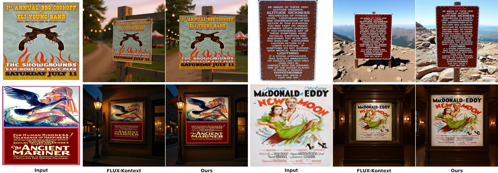
Customized generation preserves the subject but destroys its text and logos.
Each triplet: Input · FLUX-Kontext · Ours.
Trained only on product images, FineForge keeps signage copy and poster typography legible zero-shot.
Abstract
Recent advances in customized image generation exhibit strong capabilities in preserving global identity, yet they
persistently struggle to synthesize consistent fine-grained details such as text and logos. To bridge this gap, we present
FineForge, a unified dual-driven reinforcement learning framework designed to explicitly enhance
high-frequency structural fidelity within a single denoising trajectory. First, we formulate an
edge-aware terminal reward that provides an output-level, black-box learning signal for local detail accuracy.
Second, to overcome the sparse reward dilemma inherent in standard RL, we introduce
Advantage-Weighted Local Feature Alignment (AW-LFA). This white-box regularization module dynamically
leverages the terminal reward as a gating mechanism to perform dense, patch-level feature distillation, directly aligning the
model's internal hidden states with a pristine semantic space. Evaluated on customized generation benchmarks, FineForge
demonstrates substantial improvements in text integrity, logo consistency, and structural sharpness, while preserving
coherent global layouts.
Method
FineForge closes a loop between an outcome signal and an internal signal.
DIFT coarse-to-fine matching localizes each annotated detail region in the generated image; a Scharr edge pipeline strips
away color and lighting so the reward measures structure only; GRPO turns that into a terminal, group-relative advantage.
AW-LFA then reuses that same advantage as a ReLU gate: only rollouts that actually got the structure right are
allowed to pull the DiT's hidden states toward a frozen DINOv3 feature space.
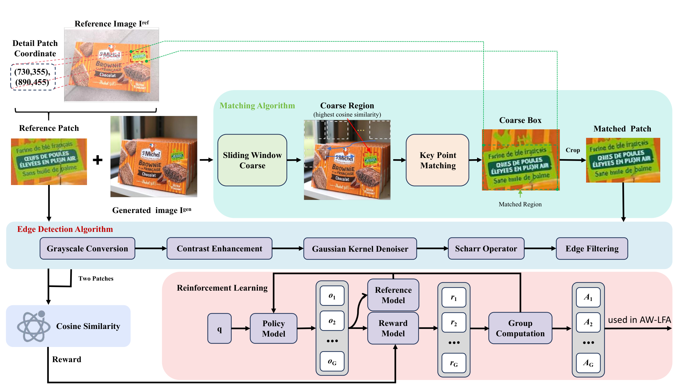
Reinforcement learning pipeline. Left: DIFT sliding-window + four-corner matching localizes the detail patch
in the generated image. Middle: edge detection (grayscale → contrast enhancement → Gaussian denoise → Scharr
operator → edge filtering). Right: GRPO computes group-relative advantages.
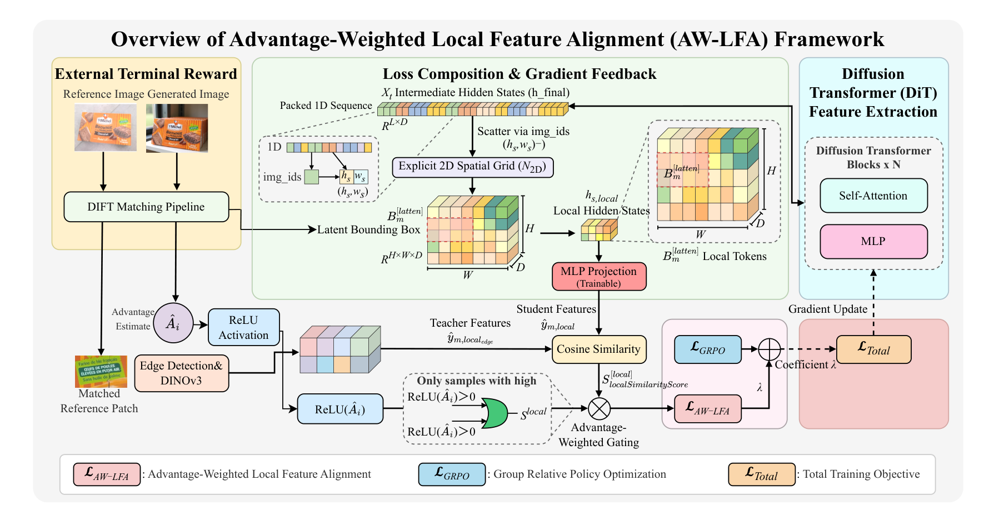
AW-LFA. The terminal advantage Âi passes through a ReLU gate, so only
positive-advantage rollouts contribute the dense patch-level distillation loss. The teacher is a
frozen DINOv3 ViT-B/16 fed an edge map; the student is the DiT's local hidden state at Block 36,
projected through a trainable MLP.
Why edges: the teacher must describe the structural skeleton — strokes and logo
boundaries — not surface texture and lighting, which the diffusion objective already supplies for free.
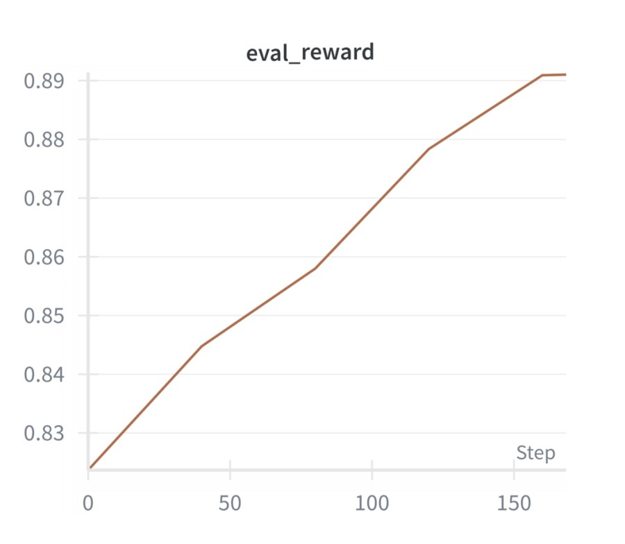
Training reward.
Qualitative Results
Same reference image, same prompt, same backbone weights before RL. The only difference is the training objective.
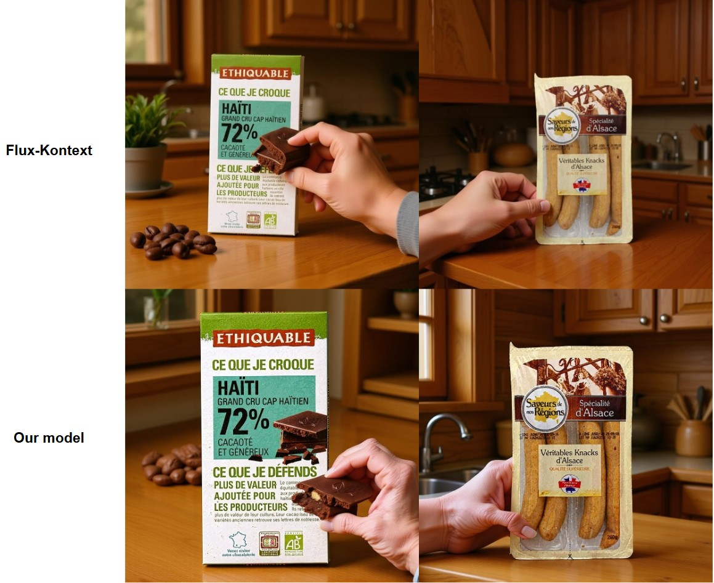
Top: Flux.1 Kontext. Bottom: FineForge. Package copy, nutrition percentages
and brand marks survive the re-composition instead of degrading into glyph-shaped texture.
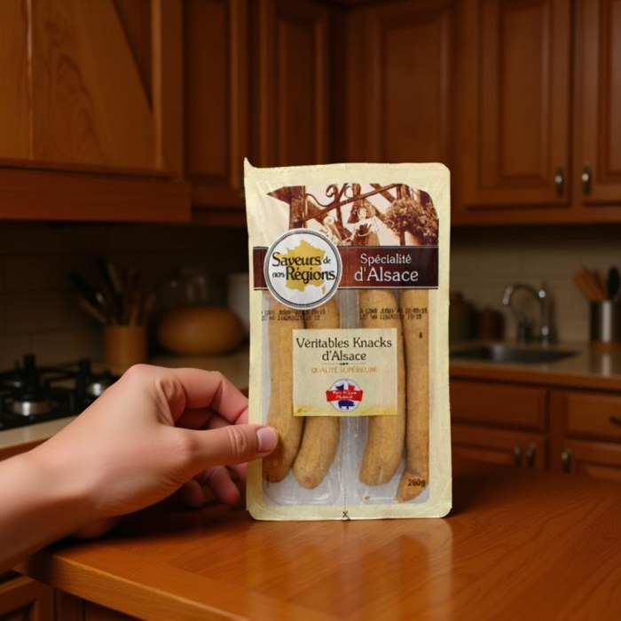
Flux.1 Kontext
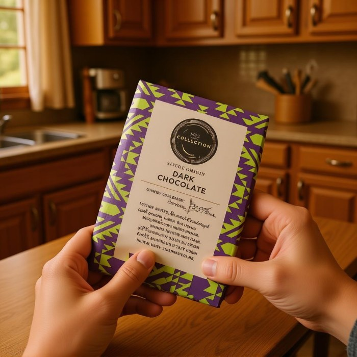
Flux.1 Kontext
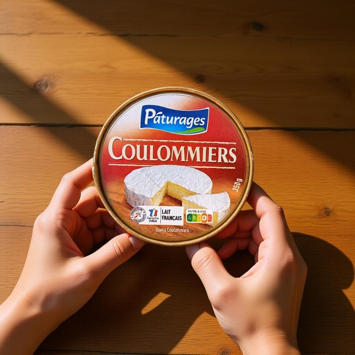
Flux.1 Kontext
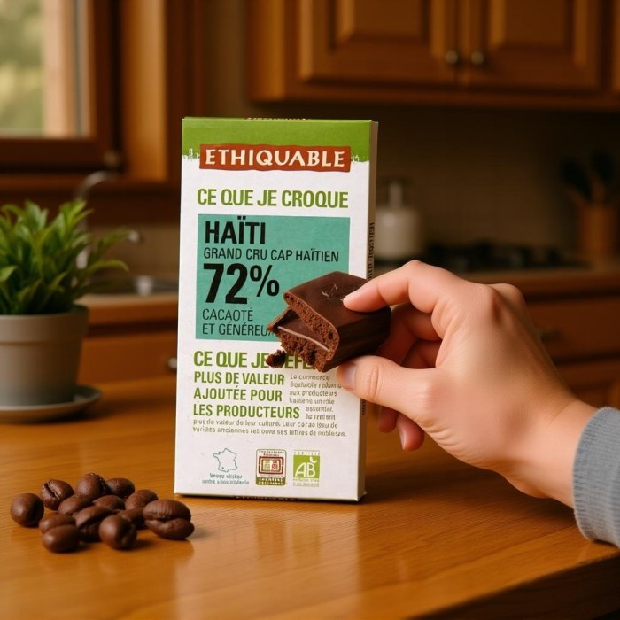
Flux.1 Kontext
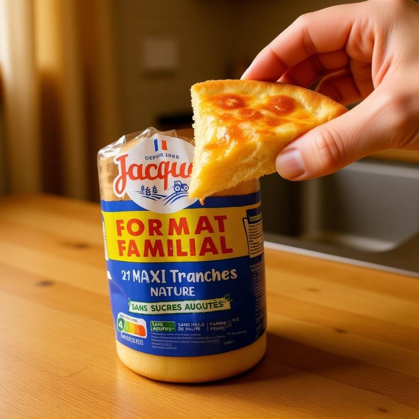
Flux.1 Kontext
Chinese text
FineForge accurately reproduces Chinese characters on a product label, confirming the approach is not tied to
Latin glyph priors.
More Results
Each row: left reference input, middle Flux.1 Kontext,
right FineForge.
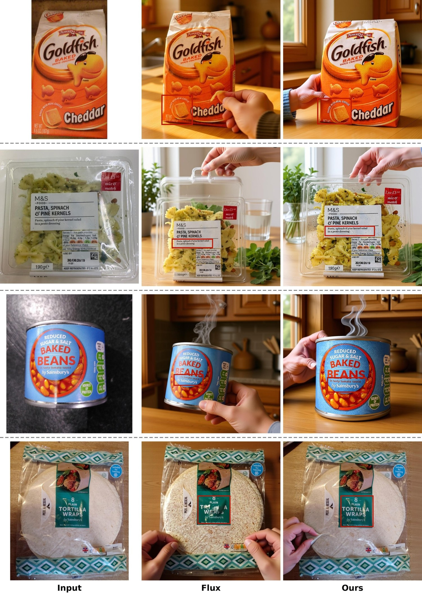
Additional qualitative comparisons (Part 1).
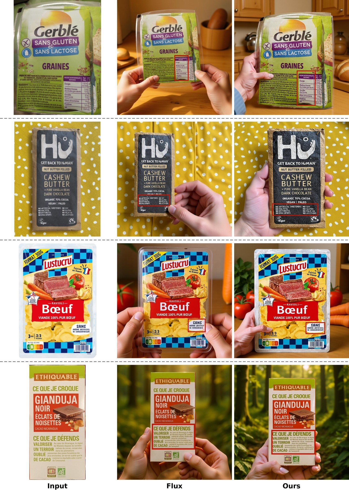
Additional qualitative comparisons (Part 2).
User Study
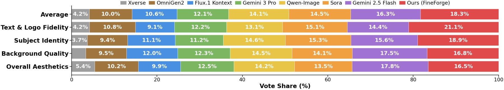
Vote share across 8 anonymized methods. FineForge takes the largest share on
Text & Logo Fidelity (21.1%), Subject Identity (18.9%), and on
average (18.3%).
Detailbench
3,900 product images at 1024×1024 sourced from Open Food Facts. Prompts generated with Qwen3-VL; annotators manually
labelled 3–5 fine-grained detail regions (text and logos) per image with precise bounding boxes. Evaluation crops come
from those human-annotated boxes, so the cropping step contributes zero variance.
We commit to fully open-sourcing the Detailbench dataset and all training / inference code upon acceptance.
All numbers on this page are taken verbatim from the paper, the rebuttal and the supplementary material.